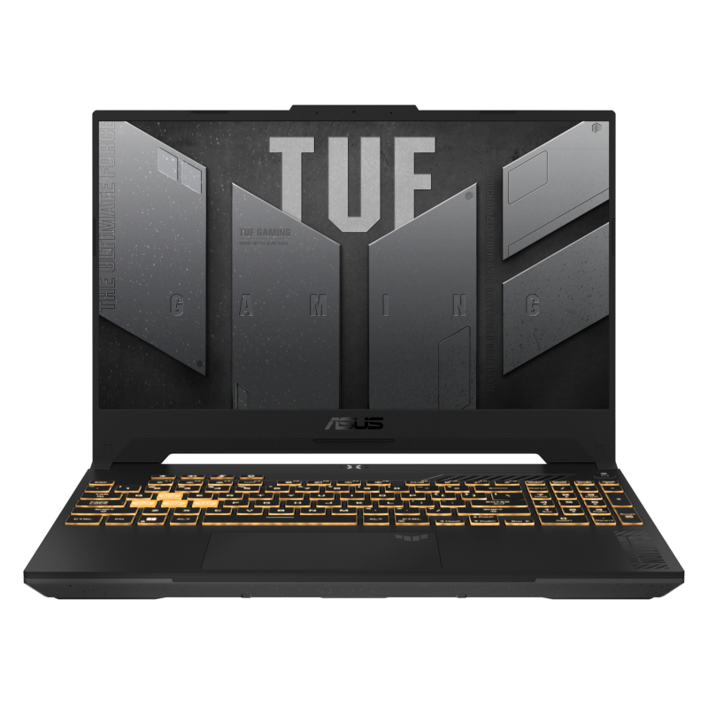
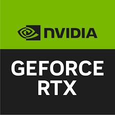

- Tên Máy : Laptop Asus TUF Gaming F15 FX507ZC4 - HN229W
Thông Số Kỹ Thuật
- CPU: Intel Core i5-12500H
- RAM: 8GB DDR4
- Ổ Cứng: 512GB SSD
- Card Đồ Họa: NVIDIA GeForce RTX 3050 4GB GDDR6
- Tần Số Quét Màn Hình : 144Hz


SẴN SÀNG CHO MỌI TÁC VỤ
- Sẵn sàng chiến mọi tựa game với ASUS TUF Gaming F15. Stream game và xử lý đa nhiệm dễ dàng với CPU lên đến Intel® Core™ i5-12500H thế hệ thứ 12 và RAM lên đến 6GB RAM DDR4 3200MHz trên nền tảng Windows 11 Home. Trải nghiệm hiệu năng chơi game đỉnh cao với GPU lên đến NVIDIA® GeForce RTX™ 3050 với công nghệ MUX Switch. Mở rộng không gian lưu trự game và tài liệu học tập dễ dàng với khe cắm mở rộng SSD NVMe đi kèm.

NVIDIA© Advanced Optimus
- Với NVIDIA© Advanced Optimus, laptop gaming có thể xuất hình trực tiếp từ GPU rời đến màn hình bằng MUX Switch, thay vì phải đi qua GPU tích hợp, giúp tăng 5-10% hiệu năng so với Laptop Gaming không có MUX Switch, đem lại trải nghiệm gaming xuất sắc nhất mà không cần người dùng trực tiếp điều khiển. Cơ chế chuyển đổi tự động này cũng tiết kiệm thời lượng pin cho máy, nhờ linh hoạt chuyển đổi chủ động giữa GPU rời hiệu suất cao và GPU tích hợp hiệu suất thấp. Cho dù bạn đang chơi game, làm việc hay giải trí, hệ thống cũng sẽ chuyển đổi sang chế độ tối ưu nhất mà không cần bạn phải tiến hành bất kỳ thao tác nào

Truy cập Asus :
© 2024 Asus. All rights reserved.